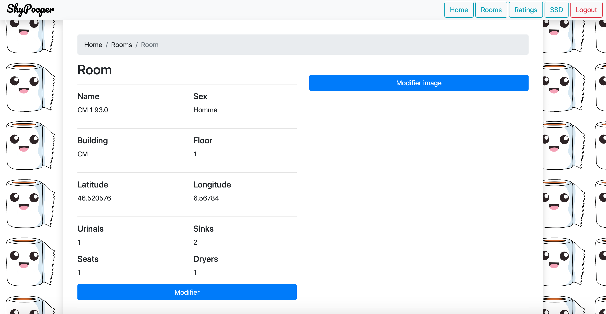
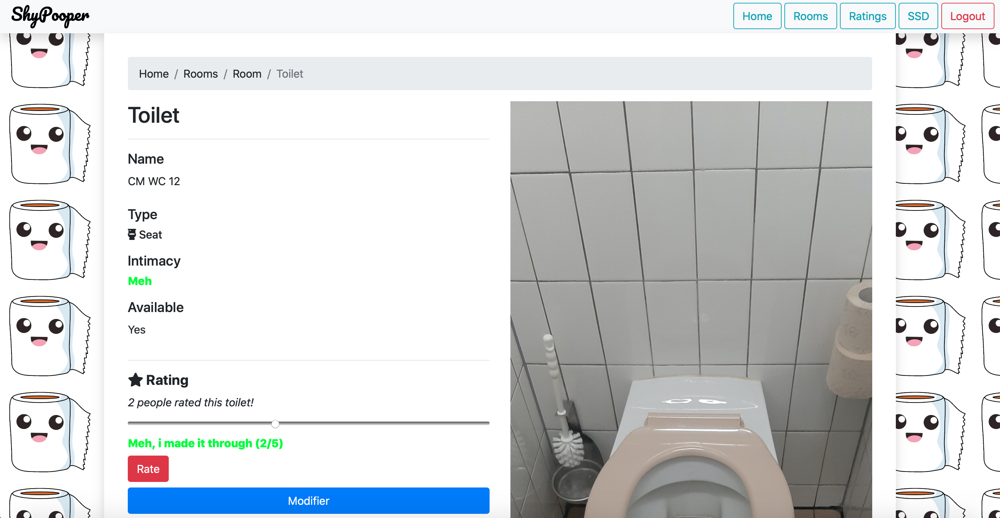
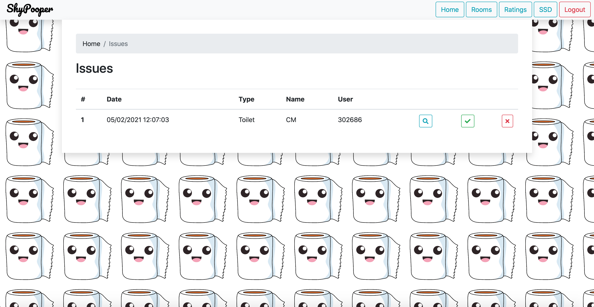
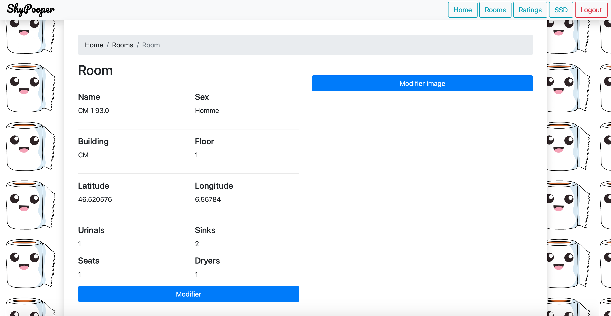
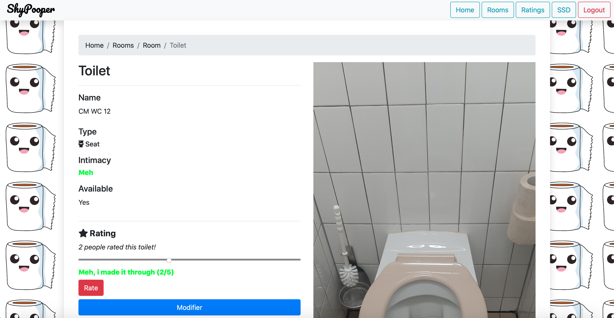
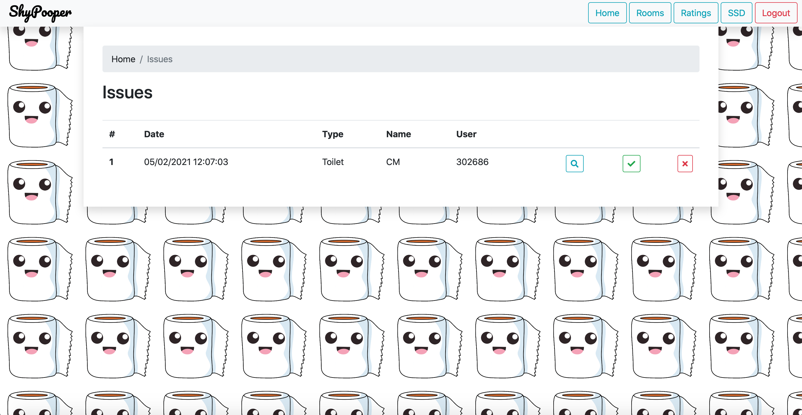

Accueil
ShyPooper
Une web application capable de rassembler toutes les données sur les toilettes de l'EPFL et de les noter afin de déterminer les meilleurs toilettes pour "Shy poopers". Grâce à ce site, codé avec OpenLayers, MongoDB et Express, n'importe qui peut voir la qualité des toilettes de l'EFPL.
Made with

 




